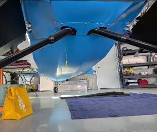

323 × 272 source pixels · Open original-size image ↗
Companion · Beartracks
Companion gear from underneath
Jay Townsend’s Companion is shown from below: the gear and shock-strut relationships to the covered belly remain visible in the completed installation.
Companion identified by the article. Builder-specific features do not establish the standard configuration.
- Builder / source
- Jay Townsend · Beartracks · Fourth Quarter 2024
- Component
- Fuselage / Landing Gear / Main Gear
- Stage / viewpoint
- Completed / underside
- Classification / configuration
- INDIVIDUAL BUILDER SOLUTION / Unknown
- Document / page
- 2024_Beartracks.pdf · PDF p36 / Q4 p4
- Original caption
- No unambiguous image-specific caption transcribed; see the source page.
- Original filename / directory
- Image40.jpg
2024_Beartracks.pdf/page-36/Image40.jpg - Source link
- Project-provided document; no public source URL established.
- Tags
- underside, completed
- Attribution
- Copyright 2024 R&B Aircraft. All rights reserved. Selected image from the user-provided project reference.
PHOTO REFERENCE ONLY — verify dimensions, hardware, and structural details against controlling Bearhawk documentation.